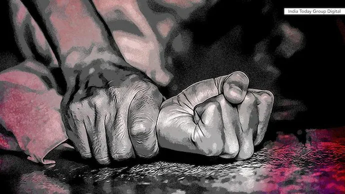

Violurile în serie
|
 |
Violul este o infracțiune pedepsită de lege, care se referă la un act sexual care are loc împotriva voinței unuia din parteneri.
Acest fenomen este cunoscut deja din antichitate, prin violarea sclavilor. Violurile au avut loc și în majoritatea războaielor când, în afară de femei, au fost violați și copii. Violurile au uneori loc în închisori sau lagăre. Persoana violată este traumatizată psihic, iar traumele pot dura toată viața.
|
În noul cod penal al României, intrat în vigoare la 01 februarie 2014, infracțiunea de viol face parte din Titlul I - Infracțiuni contra persoanei, Capitolul VIII - Infracțiuni contra libertății și integrității sexuale. |
|
Potrivit art. 218 alin. 1 din Codul penal al României, „raportul sexual, actul sexual oral sau anal cu o persoană, săvârșit prin constrângere, punere în imposibilitate de a se apăra ori de a-și exprima voința sau profitând de această stare, se pedepsește cu închisoarea de la 3 la 10 ani și interzicerea exercitării unor drepturi”. |
Analiza factorilor preexistenți ai infracțiunii de viol -Obiectul infracțiunii. Obiectul juridic special. -Obiectul juridic special al infracțiunii de viol îl constituie relațiile sociale care se referă la libertatea sexuală a oricărei persoane de a întreține relații sexuale după propria sa voință. -Obiectul material. -Obiectul material al infracțiunii este reprezentat de corpul unei persoane asupa căreia se săvârșesc raporturi sexuale, acte cu caracter sexual oral sau anal. -Subiectul activ. |

|